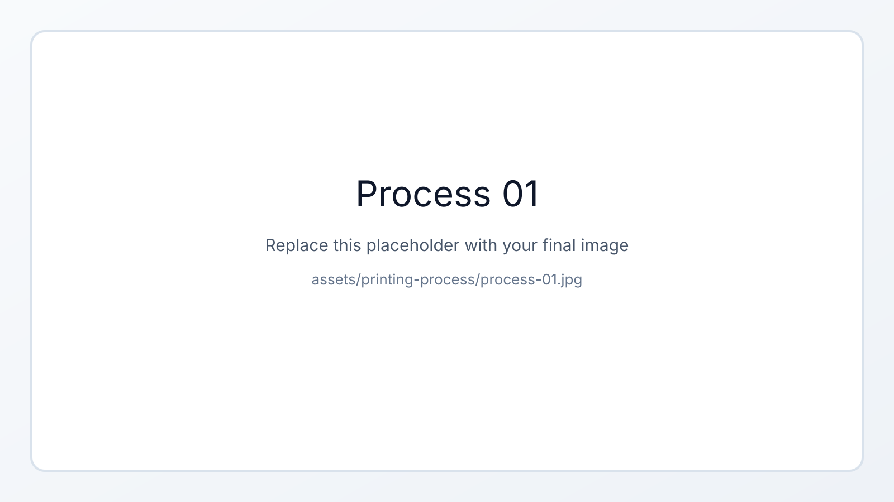
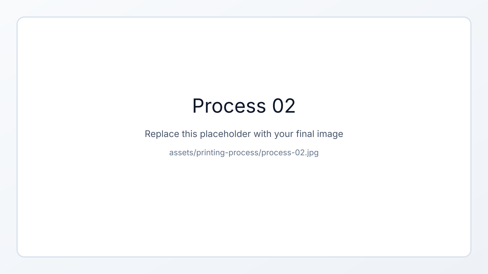
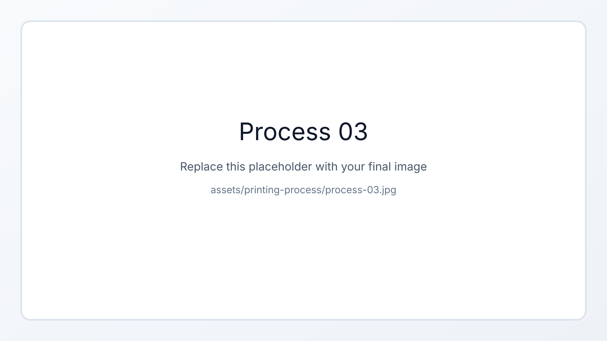

Chapter overview
Printing Process
The printing process is based on a continuous two-component polyurethane (2K PU) foam deposition, where both material components are mixed directly within the nozzle and immediately extruded onto the substrate. The process enables rapid large-scale material deposition but imposes strict constraints on flow continuity, process stability, and robot motion.
- The material is generated by in-nozzle mixing of two reactive components, which are driven by pressurized gas and require a minimum continuous flow to ensure proper mixing and avoid premature curing.
- Due to the reactive nature of the material, any interruption in flow leads to rapid curing within the mixing chamber, resulting in nozzle clogging and requiring manual replacement.
- The volumetric flow rate exhibits strong nonlinear behavior due to viscosity differences and pressure feedback from the expanding foam, making precise control challenging.
- To ensure consistent strand geometry, a nearly constant tool center point (TCP) velocity is required, directly coupling the material process with the robot motion.
Asset folder
Place the final images for this page in assets/printing-process/.
Current placeholders expect these files: process-01.jpg, process-02.jpg, and process-03.jpg.


